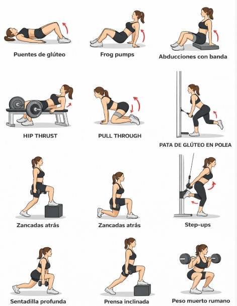
Técnica · 14 de enero de 2026
Guía visual: imágenes ilustrativas para realizar los ejercicios
EN EL GYM EN CASA
Leer el artículoRutinas y ejercicios de tu blog, ahora organizados en un sitio más claro para explorar desde el teléfono o el computador.
Elige una de las cuatro rutas principales del blog.
Los artículos completos quedaron en páginas propias. Los títulos se ordenaron y los recursos visuales se conservaron cuando estaban disponibles.
35 publicaciones

EN EL GYM EN CASA
Leer el artículo
🏠 RUTINA DE GLÚTEOS EN CASA (SIN GYM) 🔥 1. Activación profunda del glúteo Objetivo: despertar el glúteo y evitar que trabajen solo las piernas. Ejercicios: Puentes de glúteo en el piso…
Leer el artículo
🟢 RUTINA EFECTIVA PARA DESARROLLO DE GLÚTEOS 🔥 1. Activación profunda del glúteo mayor Objetivo: “Despertar” el glúteo y lograr conexión mente–músculo. Ejercicios: Puentes de glúteo…
Leer el artículo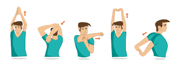
Opciones sencillas para bajar gradualmente la intensidad al terminar la actividad.
Leer el artículoQué puede aportar el enfriamiento y qué beneficios no conviene prometer.
Leer el artículo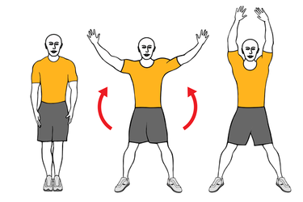
El archivo original no contiene un calendario de 21 días; es un circuito con ejercicios de distinto impacto.
Leer el artículo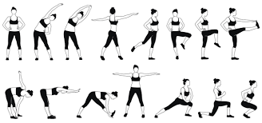
Cómo Realizar un Estiramiento Efectivo El estiramiento es un componente esencial antes y después de cualquier actividad física, ya que prepara los músculos y articulaciones para el…
Leer el artículo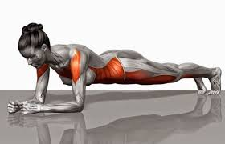
Isometría: Fortalecimiento sin movimiento La isometría se refiere a la contracción de un músculo o grupo muscular sin que este cambie de longitud ni se produzca movimiento en la…
Leer el artículo
Burpees Historia del nacimiento de los burpees Los burpees fueron creados a finales de los años 30 por Royal Huddleston Burpee, un fisiólogo (no psicólogo, como se menciona en el texto)…
Leer el artículo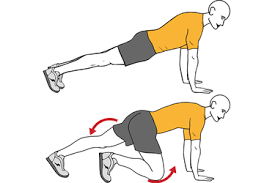
Escaladores (Mountain Climbers) Resumen sobre los Escaladores : Los Escaladores son un ejercicio de cuerpo completo que combina fuerza, cardio y resistencia, ideal para incluir en…
Leer el artículo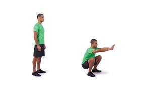
Abdominales Historia de los Ejercicios Abdominales El interés por los ejercicios abdominales tiene una evolución fascinante. En los años 50 , los entrenamientos estaban reservados…
Leer el artículo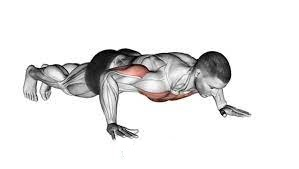
Flexión de codos o lagartijas Introducción Las flexiones de codo , comúnmente conocidas como lagartijas , plancha , pechada o simplemente flexiones , son un ejercicio clásico que utiliza…
Leer el artículo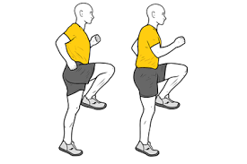
Carrera estática ¿Qué es la carrera estática? La carrera estática , también conocida como trote en el sitio, es un ejercicio aeróbico que simula el movimiento de correr sin desplazarse…
Leer el artículo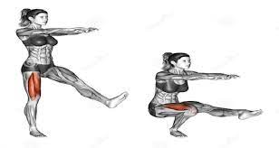
Sentadilla Pistol o Sentadilla a una pierna Introducción Las Pistol Squats o sentadillas a una pierna son un ejercicio avanzado de calistenia que combina fuerza, equilibrio, coordinación…
Leer el artículoPliometría ¿Qué es la pliometría? La pliometría , conocida como "entrenamiento a base de saltos", es un método de ejercicio que utiliza movimientos dinámicos y explosivos para…
Leer el artículo
Sentadilla con salto ¿Qué es la sentadilla con salto? La sentadilla con salto es un ejercicio pliométrico diseñado para desarrollar potencia, fuerza y velocidad en el tren inferior.…
Leer el artículoSentadilla profunda La sentadilla profunda es un ejercicio multiarticular que involucra principalmente los músculos de los miembros inferiores, la cadera y los glúteos. Este movimiento…
Leer el artículo
Zancadas con autocarga: Tonifica tu tren inferior sin equipamiento Las zancadas son un ejercicio de autocarga ideal para fortalecer y tonificar el tren inferior (cuádriceps,…
Leer el artículo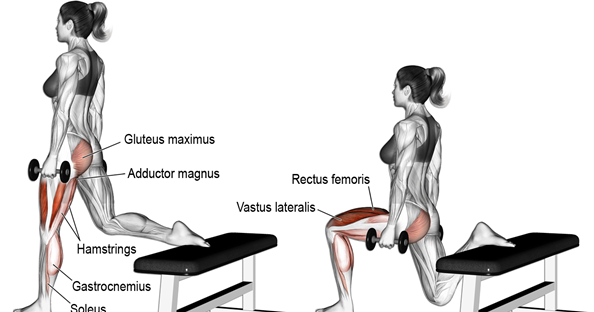
Sentadilla búlgara La sentadilla búlgara es un ejercicio unilateral que activa principalmente los extensores de la rodilla, con un enfoque especial en los cuádriceps, glúteos y la…
Leer el artículo
Sentadilla sumo La sentadilla sumo es un ejercicio fundamental para fortalecer el tren inferior, ideal tanto para principiantes como para deportistas avanzados. Con o sin pesas, este…
Leer el artículo
Sentadilla Clásica Puntos clave sobre la sentadilla clásica: Ejercicio universal y funcional : La sentadilla es un movimiento natural que hemos realizado desde siempre, pero el…
Leer el artículo
SENTADILLA ¿Qué es la sentadilla? La sentadilla (o cuclilla, si la flexión de rodillas y caderas es mayor) es un ejercicio fundamental de fuerza que trabaja principalmente: Músculos de…
Leer el artículoJumping Jacks Originados en el Ejército de los Estados Unidos como parte del entrenamiento militar, los jumping jacks (también conocidos como “saltos de tijera” o “saltos de estrella”)…
Leer el artículoConsejos para un calentamiento profesional Un calentamiento efectivo es clave para preparar el cuerpo antes del ejercicio y optimizar el rendimiento. No basta con hacerlo, ¡hay que…
Leer el artículoUna preparación gradual, adaptable al tipo de ejercicio y sin porcentajes de lesiones sin fuente.
Leer el artículoLos grupos esencial, no esencial y condicionalmente esencial, explicados brevemente.
Leer el artículo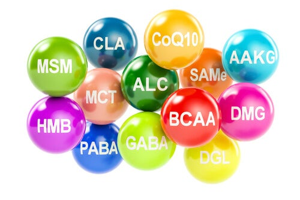
Clasificación básica, fuentes alimentarias y cautela sobre los suplementos.
Leer el artículoUn resumen introductorio de algunas funciones de las proteínas.
Leer el artículo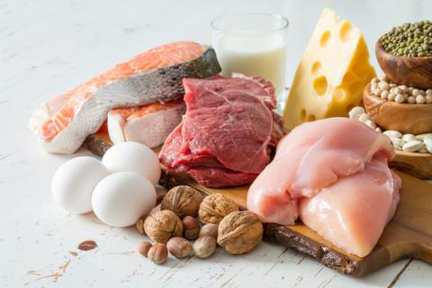
Funciones generales y factores que hacen que las necesidades varíen entre personas.
Leer el artículo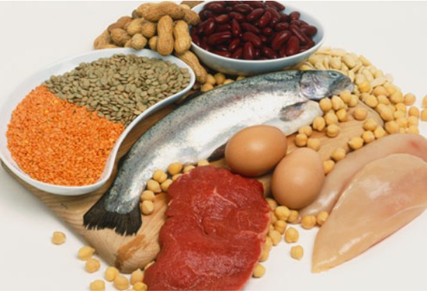
Ejemplos de alimentos con proteína; no hay una lista obligatoria para todo el mundo.
Leer el artículo
Estrategias para mantener la disciplina al entrenar La disciplina es la clave para mantener una rutina de entrenamiento constante y efectiva. Aquí te comparto un plan claro y práctico…
Leer el artículoUn archivo de ideas editoriales, no una guía completa ni recomendaciones personalizadas.
Leer el artículo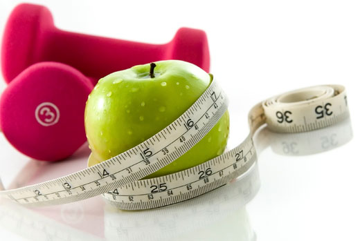
Lo último Wellness = bienestar Origen del término : La palabra "wellness" fue popularizada en la década de 1950 por el Dr. Halbert L. Dunn, quien lo definió como un proceso activo de…
Leer el artículo
Historia del fitness 1. Orígenes en la Antigua Grecia (800-146 a.C.) Los gimnasios griegos ( gymnasion ) eran centros de formación integral, no solo física, sino también intelectual y…
Leer el artículoHistoria de la Actividad Física 1. Período Prehistórico: Supervivencia y Adaptación En los albores de la humanidad, la actividad física estaba intrínsecamente ligada a la supervivencia .…
Leer el artículoNo encontré publicaciones con esa búsqueda.
Acerca de nosotros El Mundo del Fitness es un espacio creado para personas que desean mejorar su salud, condición física y calidad de vida a través del ejercicio, el movimiento y hábitos saludables. Nuestro objetivo es ofrecer información clara, práctica y confiable sobre entrenamiento físico, rutinas en casa, ejercicios funcionales, bienestar y vida activa,…
Leer acerca de nosotros